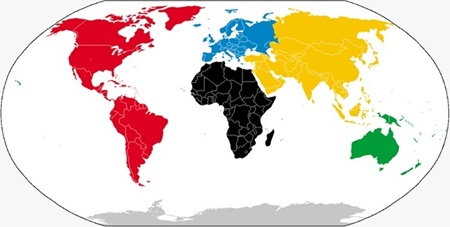

Temas destacados
¿Qué es el bruxismo?, ¿Como actúa? imagenes y videos...
Actualización de la biopsia del ganglio centinela tras quimioterapia neoadyuvante en el cáncer de mama sin y con afectación ganglionar al diagnóstico.
Enfermedades del mundo
Articulos sobrelasenfermedades más comunes en los diferentes cotinentes de la tierra
